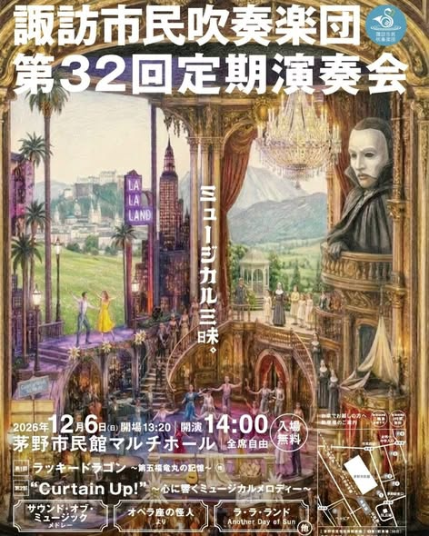

発足
1994年
定期演奏会
32回目
団員数
約40名
年間の演奏機会（2025年度）
7回

ABOUT US
音楽が好き。その気持ちがあれば、誰でも。
諏訪市民吹奏楽団（すわしすい）は1994年6月に発足した、市民参加型の吹奏楽団です。技術レベルや年齢、職業を問わず、幅広いメンバーが集い、自由で楽しい雰囲気の中で演奏活動を行っています。
発足当初より地域の皆さまに後援会を組織していただき、恵まれた環境で活動を続けています。
楽団紹介を見る
- 2026年11月02日
- 2026年11月01日
- 2026年10月30日
- 2026年10月28日
FOLLOW US
SNS
ACCESS
練習日・練習会場
諏訪中学校 小体育館
- 住所
- 長野県諏訪市清水3丁目3619-3
- 時間
- 19:00〜21:00
- 火曜日
- 合奏練習
- 木曜日
- 個人・パート練習
見学はいつでも歓迎です。事前にご連絡いただけるとスムーズです。